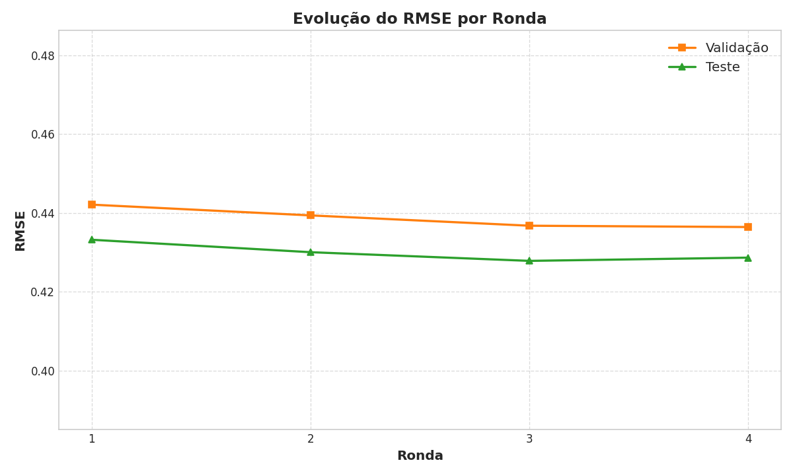
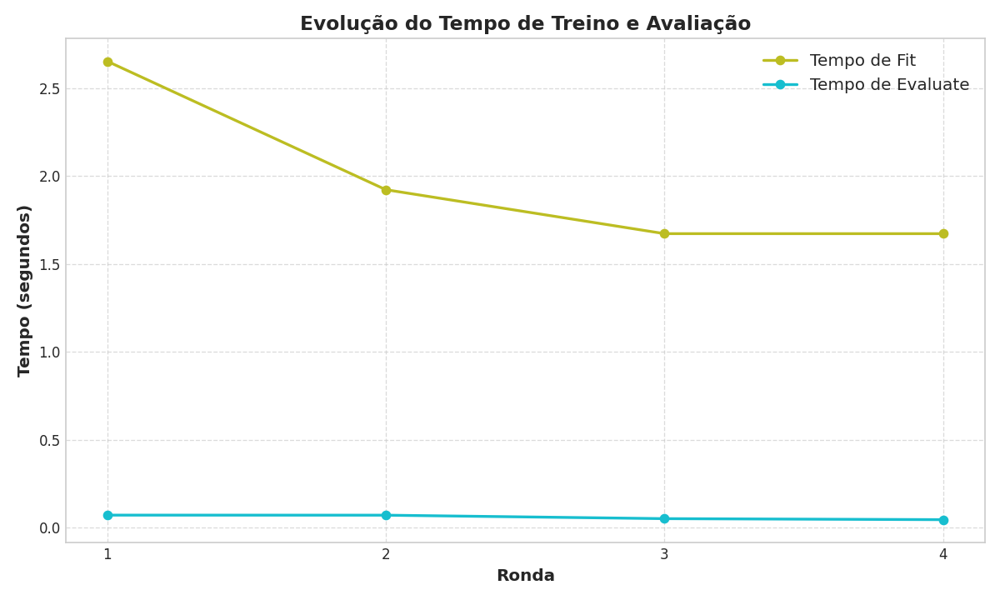

Plots de Evolução das Métricas
Losses

Rmse
Validation Metrics

Test Metrics

Processing Times
Accuracy Comparison

| Ronda | Train Loss | Val Loss | Val Rmse | Val Accuracy | Val Precision | Val Recall | Val F1 |
|---|---|---|---|---|---|---|---|
| 1 | 0.2282 | 0.4486 | 0.08069861 | 0.9915 | 0.9048 | 1.0000 | 0.9500 |
| 2 | 0.1901 | 0.4227 | 0.069296926 | 0.9936 | 0.9268 | 1.0000 | 0.9620 |
| 3 | 0.1875 | 0.4196 | 0.067407876 | 0.9936 | 0.9268 | 1.0000 | 0.9620 |
| 4 | 0.1865 | 0.4194 | 0.06966665 | 0.9936 | 0.9268 | 1.0000 | 0.9620 |
| 5 | 0.1862 | 0.4179 | 0.06597273 | 0.9957 | 0.9500 | 1.0000 | 0.9744 |
| Ronda | Test Loss | Test Rmse | Test Accuracy | Test Precision | Test Recall | Test F1 |
|---|---|---|---|---|---|---|
| 1 | 0.2625 | 0.0991 | 0.9893 | 0.9020 | 1.0000 | 0.9485 |
| 2 | 0.2305 | 0.0779 | 0.9936 | 0.9388 | 1.0000 | 0.9684 |
| 3 | 0.2287 | 0.0776 | 0.9936 | 0.9388 | 1.0000 | 0.9684 |
| 4 | 0.2278 | 0.0790 | 0.9936 | 0.9388 | 1.0000 | 0.9684 |
| 5 | 0.2277 | 0.0770 | 0.9936 | 0.9388 | 1.0000 | 0.9684 |
| Ronda | Fit | Evaluate | Lime | Shap |
|---|---|---|---|---|
| 1 | 0.4507 | 0.0015 | 0.0000 | 0.0000 |
| 2 | 0.0709 | 0.0016 | 0.0000 | 0.0000 |
| 3 | 0.0915 | 0.0016 | 0.0000 | 0.0000 |
| 4 | 0.0655 | 0.0017 | 0.0000 | 0.0000 |
| 5 | 0.0677 | 0.0015 | 2.6468 | 10.5059 |

Índice no dataset original: 2
Previsão do Modelo: Normal (valor: 0.00082, confiança: 99.92%)
Total de Features: 965
| Feature | Valor |
|---|---|
| dl_bitrate_1 | 5683.0 |
| ul_bitrate_1 | 2221.0 |
| cell_x_dl_retx_1 | -1.0 |
| cell_x_dl_tx_1 | -1.0 |
| cell_x_ul_retx_1 | -1.0 |
| cell_x_ul_tx_1 | -1.0 |
| ul_total_bytes_non_incr_1 | 420.0 |
| dl_total_bytes_non_incr_1 | 420.0 |
| dl_bitrate_2 | 5837.0 |
| ul_bitrate_2 | 2205.0 |
| cell_x_dl_retx_2 | -1.0 |
| cell_x_dl_tx_2 | -1.0 |
| cell_x_ul_retx_2 | -1.0 |
| cell_x_ul_tx_2 | -1.0 |
| ul_total_bytes_non_incr_2 | 420.0 |
| dl_total_bytes_non_incr_2 | 420.0 |
| dl_bitrate_3 | 5702.0 |
| ul_bitrate_3 | 2195.0 |
| cell_x_dl_retx_3 | -1.0 |
| cell_x_dl_tx_3 | -1.0 |
Mostrando até 20 features não-zero com valores originais (não normalizados)

Gráfico não disponível
Gráfico não disponível
Gráfico não disponível
Gráfico não disponível
Relatório gerado automaticamente em 2025-05-05 17:07:24